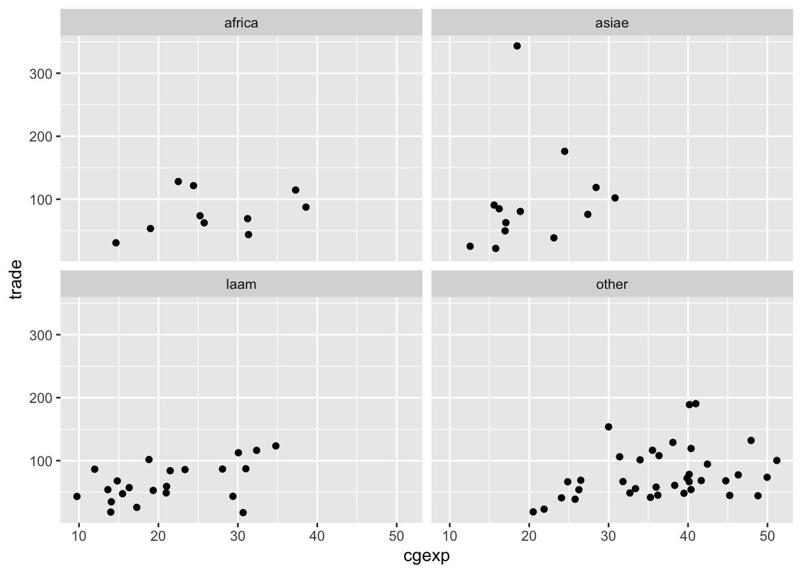

10 Exploratory Visualization
R has a number of powerful visualization capabilities, but one of the most frequently used tools for data visualization in R is the ggplot2 package, which is a part of the tidyverse suite. Data visualization using ggplot2 is a vast topic; our goal here is to provide you with some basic intuition for how ggplot visualizations are constructed by developing some basic exploratory visualizations. While our treatment here focuses on bar charts and scatterplots, ggplot offers functions for a much wider variety of visualizations. However, bar charts and scatterplots offer a convenient way to familiarize yourself with basic ggplot syntax.
10.1 Bar Charts
Let’s make some simple bar charts for the African countries in pt_copy. Let’s say we want to make a bar chart that displays variation in the “cgexp” variable (central government expenditure as a share of GDP) for African countries. We’ll begin by extracting the Africa observations from pt_copy using the filter() function, and removing any “NA” observations for this variable from the dataset using the drop_na() function:
Now, let’s make a basic bar chart of the “cgexp” data from pt_africa, and assign it to an object named cgexp_africa:
# Creates a bar chart of the "cgexp" variable (central government expenditure as a share of GDP) for the Africa observations and assigns the plot to an object named "cgexp_africa"
cgexp_africa<-
ggplot(pt_africa)+
geom_col(aes(x=country, y=cgexp))+
labs(
title="Central Govt Expenditure as Pct of GDP for Select African Countries (1990-1998 Average)",
x="Country Name",
y="CGEXP")+
theme(plot.title=element_text(hjust=0.5),
axis.text.x = element_text(angle = 90))Let’s unpack the code above:
- The expression
ggplot(pt_africa)specifies that we want to initialize ggplot, and declares the dataset containing the data we want to map (“pt_africa”) geom_col()indicates that we want to make a bar chart. If you wanted to make a different type of chart, this function would be different. Within thegeom_col()function, we indicate our desired aesthetic mappingaes(); an aesthetic mapping indicates how we would like variables in the datasets to be represented on the chosen visualization. Here, the expressionx=country, y=cgexpsimply indicates that we want countries to be represented on the x-axis of the chart, and the “cgexp” variable to be represented on the y-axis.- The arguments to the
labs()function (short for “labels”) specify a desired title for the visualization, and x-axis and y-axis labels. - The arguments to the
theme()function specify a desired position for the plot title, and a desired format for the x-axis labels.
Note that ggplot2 functions are chained together with a “+” sign.
Let’s see what cgexp_africa looks like:

This is a nice start, but it may look a bit cleaner if we arrayed the chart in ascending order with respect to the cgexp variable. To do so, we can slightly change our aesthetic mapping to look like this: aes(x=reorder(country, cgexp), y=cgexp)). This indicates that we’d still like the “cgexp” variable on the y-axis, and countries on the x-axis; however, we’d also like to order countries in ascending order with respect to the “cgexp” variable. We’ll assign this modified chart to a new object named cgexp_africa_ascending:
# Creates a bar chart of the "cgexp" variable (central government expenditure as a share of GDP) for the Africa observations; countries are on the x axis and arrayed in ascending order with respect to the cgexp variable, which is on the y-axis; plot is assigned to an object named "cgexp_africa_ascending"
cgexp_africa_ascending<-
ggplot(pt_africa)+
geom_col(aes(x=reorder(country, cgexp), y=cgexp))+
labs(
title="Central Govt Expenditure as Pct of GDP for Select African Countries (1990-1998 Average)",
x="Country Name",
y="CGEXP")+
theme(plot.title=element_text(hjust=0.5),
axis.text.x = element_text(angle = 90))All other apsects of the code are the same as before. Let’s see what the modified chart looks like:
If, instead of arrange the countries in asscending order with respect to the “cgexp” variable, we want to arrange them in descending order, we can simply put a “-” before “cgexp” within the aesthetic mapping; we’ll assign the modified chart to a new object named cgexp_africa_descending:
# Creates a bar chart of the "cgexp" variable (central government expenditure as a share of GDP) for the Africa observations; countries are on the x axis and arrayed in descending order with respect to the cgexp variable, which is on the y-axis; plot is assigned to an object named "cgexp_africa_descending"
cgexp_africa_descending<-
ggplot(pt_africa)+
geom_col(aes(x=reorder(country, -cgexp), y=cgexp))+
labs(
title="Central Govt Expenditure as Pct of GDP for Select African Countries (1990-1998 Average)",
x="Country Name",
y="CGEXP")+
theme(plot.title=element_text(hjust=0.5),
axis.text.x = element_text(angle = 90))Let’s see how the cgexp_africa_descending plot now looks:
Sometimes, you may wish to invert the axes of your charts, which you can do using the coord_flip() function. The code below takes the cgexp_africa_ascending chart we created above, inverts the axes using coord_flip(), and assigns the result to a new object named cgexp_africa_ascending_inverted:
# creates a sideways bar chart using the "coord_flip" function and assigns it to a new object named "cgexp_africa_ascending_inverted"
cgexp_africa_ascending_inverted<-cgexp_africa_ascending+
coord_flip()Let’s see what cgexp_africa_ascending_inverted looks like:
10.2 Scatterplots
The syntax to make a scatterplot is fairly similar to the syntax used to create a bar chart; the main difference is that instead of using the geom_col() function to indicate that we want a bar chart, we use the geom_point() function to indicate that we want a scatterplot. The code below generates a scatterplot of the “cgexp” variable (on the x axis) and the “trade” variable (on the y-axis) for all observations in the pt_copy dataset, and assigns it to a new object named scatter_cgexp_trade:
# Creates scatterplot with "cgexp" variable on x-axis and "trade" variiable on y-axis and assigns to object named "scatter_cgexp_trade"
scatter_cgexp_trade<-
ggplot(pt_copy)+
geom_point(aes(x=cgexp, y=trade))+
labs(title="Trade Share of GDP \nas a function of\n Central Govt Expenditure (1990-1998 Average) ",
x="Central Government Expenditure (Pct of GDP)", y="Overall Trade (Pct of GDP)")+
theme(plot.title=element_text(hjust=0.5)) Let’s see what scatter_cgexp_trade looks like:
## Warning: Removed 3 rows containing missing values (`geom_point()`).
Sometimes, you may wish to distinguish between different groups in a scatterplot. One way to do that is to assign different colors to different groups of interest. For example, if we wanted to distinguish continents in the scatterplot, we could specify color=continent in the aesthetic mapping. The code below does so, and assigns the result to a new object named scatter_cgexp_trade_grouped:
# Creates scatterplot with "cgexp" variable on x-axis and "trade" variable on y-axis, and uses different color points for different continents; plot is assigned to object named "scatter_cgexp_trade_grouped"
scatter_cgexp_trade_grouped<-
ggplot(pt_copy)+
geom_point(aes(x=cgexp, y=trade, color=continent))+
labs(title="Trade Share of GDP \nas a function of\n Central Govt Expenditure (1990-1998 Average) ",
x="Central Government Expenditure (Pct of GDP)", y="Overall Trade (Pct of GDP)")+
theme(plot.title=element_text(hjust=0.5)) Let’s see what scatter_cgexp_trade_grouped looks like:
## Warning: Removed 3 rows containing missing values (`geom_point()`).
An alternative way of parsing categories is to use facets, which create separate visualizations for each of the different categories in a dataset. Below, for example, we create separate scatterplots for each continent (this is specified by the final line in the code, facet_wrap(~continent, nrow=2)):
# Creates continent-level subplots for scatterplot, using facets; assigns plot to new object named "scatter_cgexp_trade_facets"
scatter_cgexp_trade_facets<-
ggplot(pt_copy) +
geom_point(aes(x = cgexp, y = trade)) +
facet_wrap(~ continent, nrow = 2)## Warning: Removed 3 rows containing missing values (`geom_point()`).
Finally, it’s important to note that it’s possible to layer different geometries over each other. For example, the code below plots a scatterplot for the pt_copy dataset with the “cgexp” variable on the x axis and the trade variable on the y-axis, but also plots a line of best fit on top of the scatterplot with geom_smooth(aes(x=cgexp, y=trade), method="lm"); we’ll assign the resulting plot to scatter_cgexp_trade_line:
# Creates scatterplot with "cgexp" variable on x-axis and "trade" variiable on y-axis, adds line of best fit; plot assigned to object named "scatter_cgexp_trade_line"
scatter_cgexp_trade_line<-
ggplot(pt_copy)+
geom_point(aes(x=cgexp, y=trade))+
geom_smooth(aes(x=cgexp, y=trade), method="lm")+
labs(title="Trade Share of GDP \nas a function of\n Central Govt Expenditure (1990-1998 Average) ",
x="Central Government Expenditure (Pct of GDP)", y="Overall Trade (Pct of GDP)")+
theme(plot.title=element_text(hjust=0.5)) ## `geom_smooth()` using formula = 'y ~ x'## Warning: Removed 3 rows containing non-finite values (`stat_smooth()`).## Warning: Removed 3 rows containing missing values (`geom_point()`).